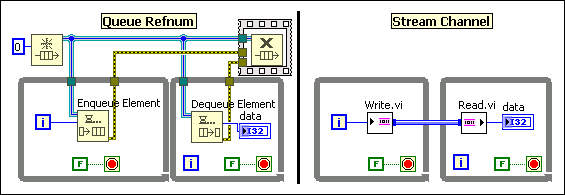
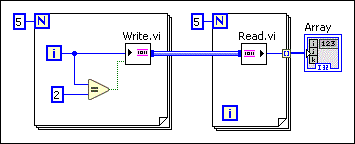
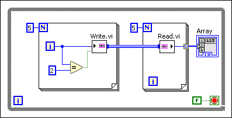
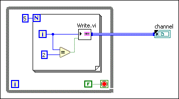

Open example�
Open example�
 Find related examples
Find related examplesA channel wire is a wire in LabVIEW that expresses an asynchronous communication between two parallel sections of code without forcing an execution order. Using a channel wire is similar to using a refnum or a variable that one loop writes into and the other loop reads from. Instead of using a refnum or a variable, you represent the data transfer graphically as a wire.
The following figure illustrates that you can use channel wires to build your block diagram to achieve the same functionality as using queue refnums.

Every channel wire must have at least two endpoints: a writer and a reader. Endpoints are places in the code that exchange data. Writer endpoints write data to the channel. Reader endpoints read data from the channel. By connecting the writer endpoint to the reader endpoint using a channel wire, you enable asynchronous data communication between parallel sections of code.
LabVIEW provides the following channel templates that you can use to build applications. Each template expresses a different communications protocol. You can choose from the following templates based on your communications and application needs:
| LabVIEW | Real-Time Module | FPGA Module* |
|---|---|---|
| Stream Tag Messenger Accumulator Tag Event Messenger High Speed Stream Lossy Stream One Element Stream |
Stream Tag Messenger Accumulator Tag Event Messenger High Speed Stream Lossy Stream One Element Stream Real Time Stream |
Stream Tag Accumulator Tag Lossy Stream One Element Stream |
| *For each supported channel template, the FPGA Module supports only a subset of the endpoints. | ||
You can create a channel writer endpoint or a channel reader endpoint by right-clicking a terminal or a wire and selecting Create�Channel Writer or Create�Channel Reader. In the Select Channel Endpoint dialog box that appears, you can switch between writer or reader endpoints by clicking Switch Read/Write. When you create an endpoint from a terminal, you instantiate the channel template with that data type as its transmission type.
All Stream channels are not forkable, which means they connect a single writer endpoint to a single reader endpoint. All the other channels are forkable to allow multiple writers or multiple readers on the same channel.
The calling block diagram of a channel governs the channel execution. A calling block diagram is the lowest level block diagram that contains all endpoints of a channel or all the nodes that call those endpoints.
A channel initializes when its calling block diagram begins running. A channel closes when the last element? or abort input on one of its endpoints is TRUE. If a channel closes, it ignores further writes to the channel. The channel reinitializes when its calling block diagram begins another run. A calling block diagram can be a structure node, the top-level block diagram of a VI, or a higher level block diagram that calls the current top-level VI.
In the following figure, the calling block diagram of the channel is the top-level diagram of this VI. The channel initializes when the calling block diagram begins running, which means the channel initializes each time the top-level VI begins running or each time the top-level VI is called as a subVI.

In the following figure, the calling block diagram of the channel is the While Loop. The channel initializes when the While Loop begins running, which means the channel initializes on each iteration of the While Loop.

In the following figure, the calling block diagram of the channel is not the top-level VI but is higher than the current top-level block diagram. The channel initializes when the higher level block diagram begins running, which means the channel initializes each time the higher level block diagram begins running or each time the higher level block diagram is called as a subVI. The channel does not act upon the iterations of the While Loop to initialize because the While Loop does not contain all the endpoints of the channel.

In all the channel instances above, the Write endpoint writes the first three values to the channel but ignores the final two values because the last element? input is TRUE when the number of elements left unwritten in the array equals to 2.
Using channel wires provides the following benefits:
Open example�
Find related examples